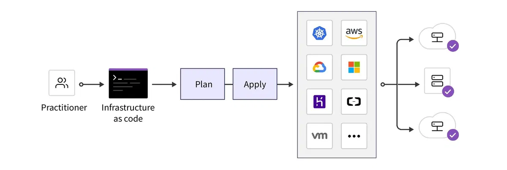
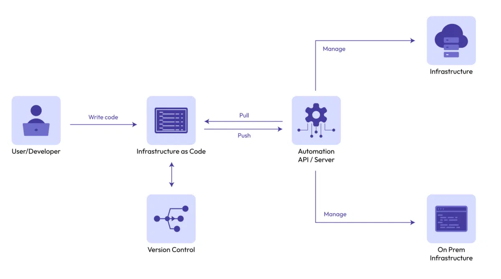

IaC (Infrastructure as Code)¶
https://200lab.io/blog/iac-la-gi
Definition¶
- Infrastructure as Code là cách quản lý, cung cấp cơ sở hạ tầng bằng code và các công cụ tự động hóa thay vì cấu hình thủ công qua giao diện.
- Trước khi có IaC, việc triển khai cơ sở hạ tầng thường phải thông qua các bước thủ công, dẫn đến các vấn đề như
- Mất thời gian
- Khó đảm bảo tính đồng nhất giữa các môi trường
- Dễ phát sinh lỗi

Advantages¶
- Nâng cao hiệu suất, độ tin cậy và khả năng tái lập (reproducibility) của hệ thống
- Dễ dàng mở rộng hệ thống
- Dễ dàng theo dõi và quản lý cơ sở hạ tầng
- Tài liệu hoá tự động: Quá trình triển khai được tự động ghi lại (documentation) dưới dạng code, dễ dàng theo dõi và kiểm tra.
- Đảm bảo tính nhất quán: Tái sử dụng code để triển khai nhiều lần mà vẫn đảm bảo mọi thành phần như máy chủ, database, mạng, firewall, load balancer, ... đều được thiết lập chính xác như nhau.
- Tiết kiệm thời gian: Chỉ cần chạy code trong vài phút (Không cần cấu hình thủ công từng bước)
- An toàn và tiết kiệm chi phí:
- Việc sử dụng code đảm bảo mọi cấu hình đều được ghi lại một cách chính xác và dễ kiểm tr.
- Và chỉ cần trả tiền cho các tài nguyên khi thực sự cần. Ví dụ, không cần giữ môi trường phát triển hay kiểm thử chạy 24/7. Bạn có thể tự động bật/tắt hạ tầng khi cần.
Quy trình phát triển IaC¶

1. Viết script hoặc config để triển khai cơ sở hạ tầng¶
- Viết các đoạn code cấu hình thay vì phải cấu hình thủ công
- Có thể viết một script Terraform để tạo máy chủ ảo trên AWS hoặc Google Cloud
resource "aws_instance" "web_server" { ami = "ami-123456" instance_type = "t2.micro" } - Có thể viết một file Dockerfile để build image Docker
FROM node:12 WORKDIR /app COPY package*.json ./ RUN npm install COPY . . EXPOSE 3000 CMD ["node", "index.js"] - Có thể viết một file Ansible playbook để cài đặt các phần mềm cần thiết
- name: Install Apache hosts: all become: yes tasks: - name: Install Apache apt: name: apache2 state: present - Có thể viết một file Kubernetes manifest để triển khai ứng dụng lên Kubernetes
apiVersion: apps/v1 kind: Deployment metadata: name: myapp spec: replicas: 3 selector: matchLabels: app: myapp template: metadata: labels: app: myapp spec: containers: - name: myapp image: myapp:latest ports: - containerPort: 80
2. Chạy script để triển khai cơ sở hạ tầng¶
- Lệnh
terraform applyđể tạo máy chủ ảo - Lệnh
docker build -t myapp .để build image Docker - Lệnh
ansible-playbook playbook.ymlđể cài đặt Apache - Lệnh
kubectl apply -f deployment.yamlđể triển khai ứng dụng lên Kubernetes
3. Kiểm tra cơ sở hạ tầng¶
4. Quản lý mã nguồn¶
5. Tự động hóa¶
Tools¶
- Terraform: Dùng để quản lý cơ sở hạ tầng cloud
- Ansible: Dùng để cài đặt và cấu hình phần mềm
- Docker: Dùng để đóng gói ứng dụng
- Kubernetes: Dùng để triển khai và quản lý ứng dụng
- Jenkins: Dùng để tự động hóa việc triển khai, kiểm tra và quản lý mã nguồn
- Git: Dùng để quản lý mã nguồn